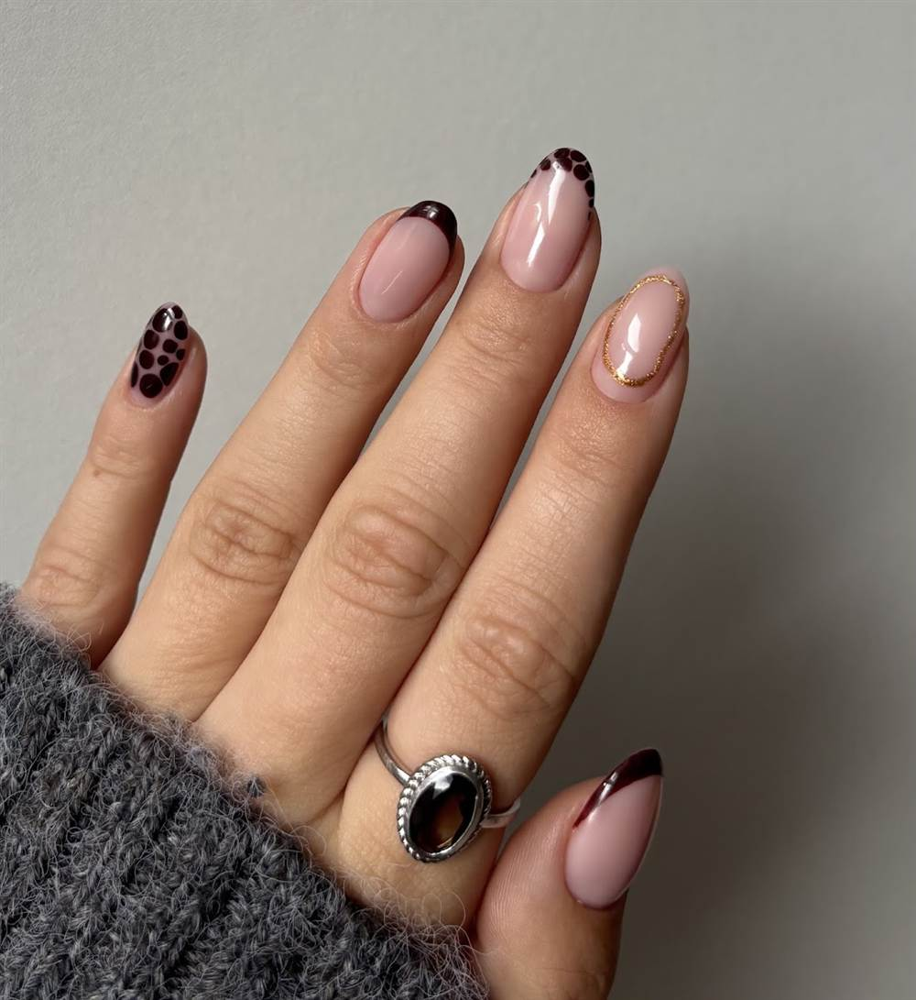
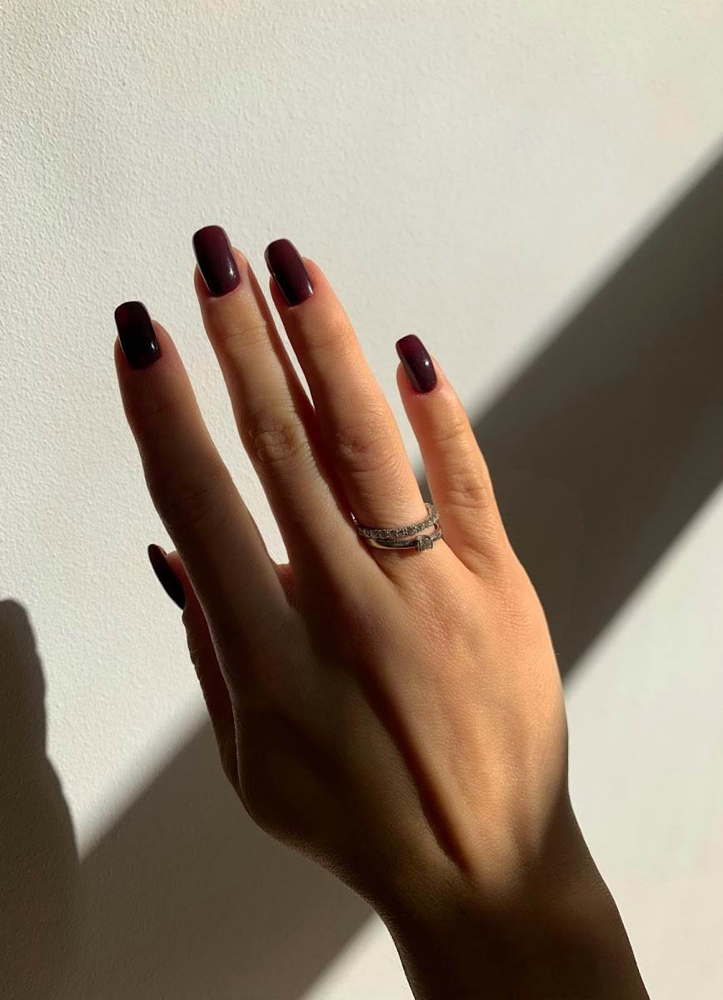
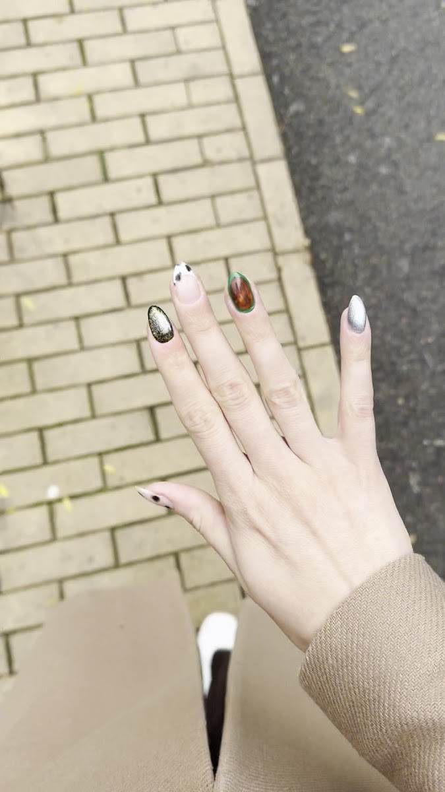
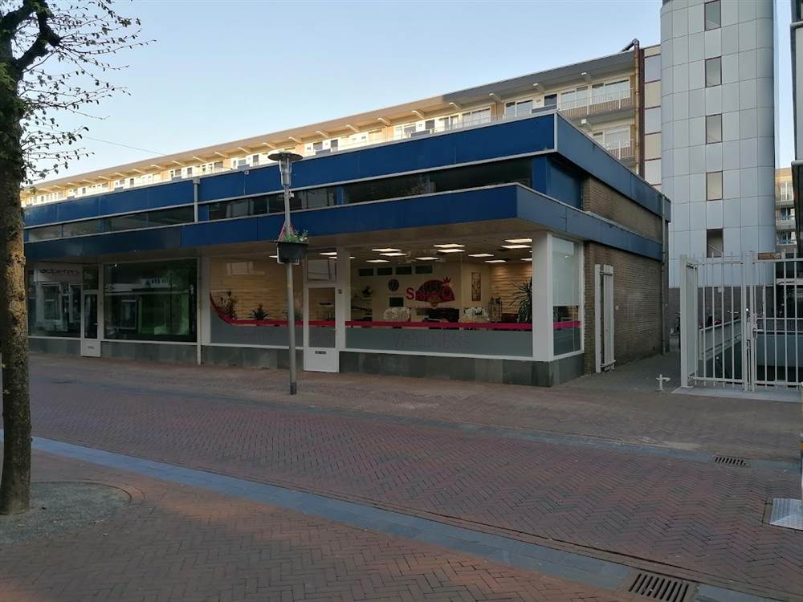
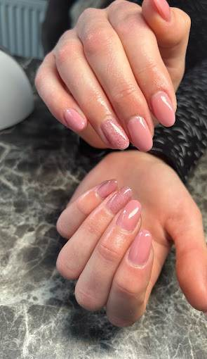

★★★★★
Ik kom hier altijd met veel plezier en ben iedere keer weer ontzettend blij met mijn nagels. Ze werken heel netjes, hygiënisch en nemen echt de tijd.
Kim van DuurenNagelstudio aan de Kapelstraat in Apeldoorn. Zeven dagen per week open van negen tot zeven, dus u hoeft er geen vrij voor te nemen.

4,9 uit 110 reviewsAlles hieronder is hier gezet. Geen voorbeeldplaatjes.




Weet u nog niet precies wat u wilt? Kies bij het boeken gewoon een nieuwe set, dan kijken we samen wat past.
Van een rustige nude tot volledig nagelontwerp. U kiest de vorm, de lengte en de kleur.
De aangroei wordt bijgewerkt in plaats van alles opnieuw. Gemiddeld elke drie tot vier weken.
French, chrome, print of steentjes. Laat een foto zien van wat u mooi vindt, dan maken wij het.
Hieronder ziet u wat er vrij is. Kies een behandeling, een dag en een tijd, en het staat meteen genoteerd. Ook 's avonds en in het weekend.
110 reviews op Google, gemiddeld een 4,9.
Ik kom hier altijd met veel plezier en ben iedere keer weer ontzettend blij met mijn nagels. Ze werken heel netjes, hygiënisch en nemen echt de tijd.
Kim van DuurenHet resultaat is elke keer naar mijn wens, en als er tussendoor iets met mijn nagels is wordt het altijd snel opgelost.
Feeke GeertsInmiddels ga ik al meer dan een jaar naar deze top salon, waar veel aandacht, tijd en precisie in hun werk gaat.
Jasmijn